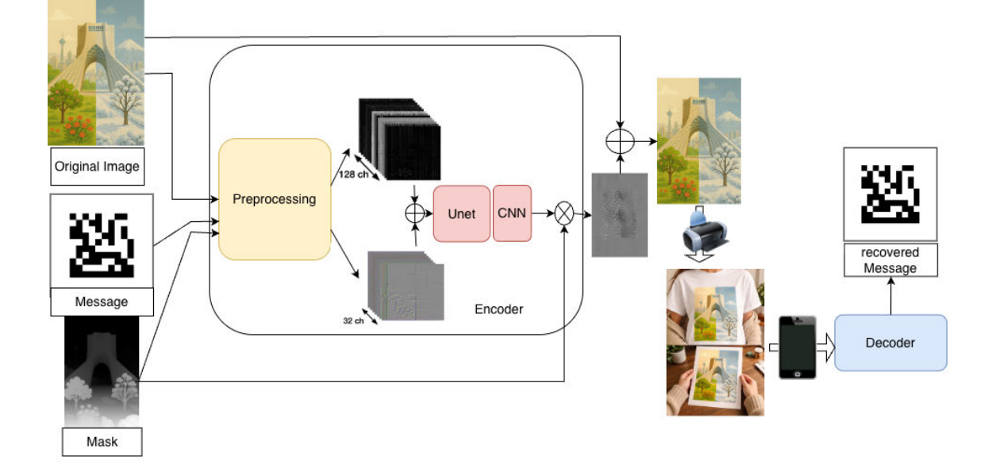
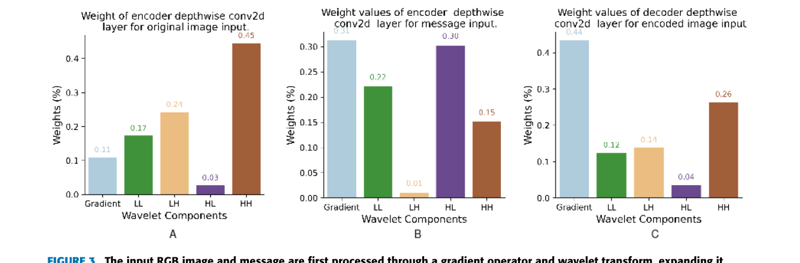
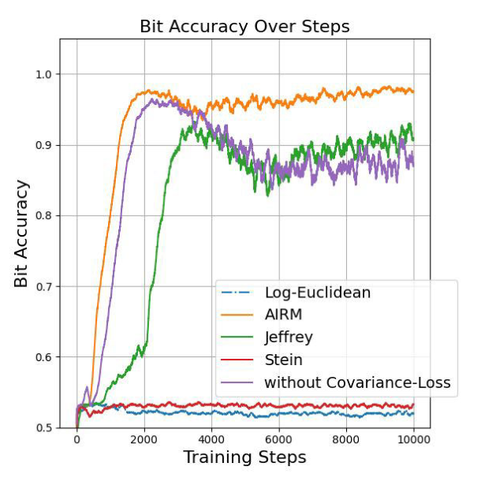
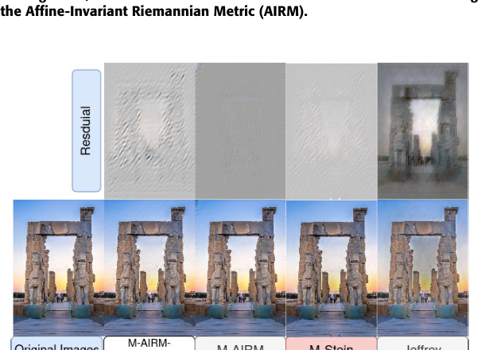
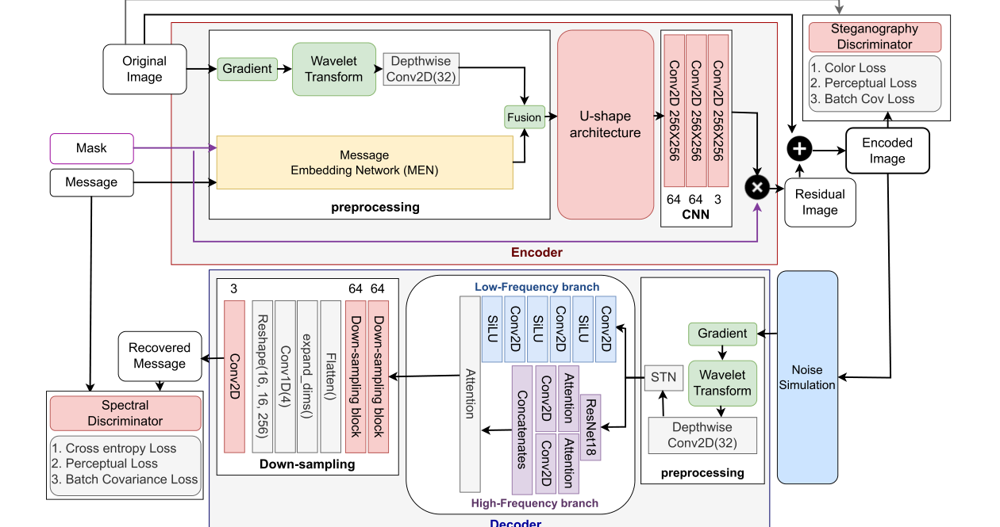
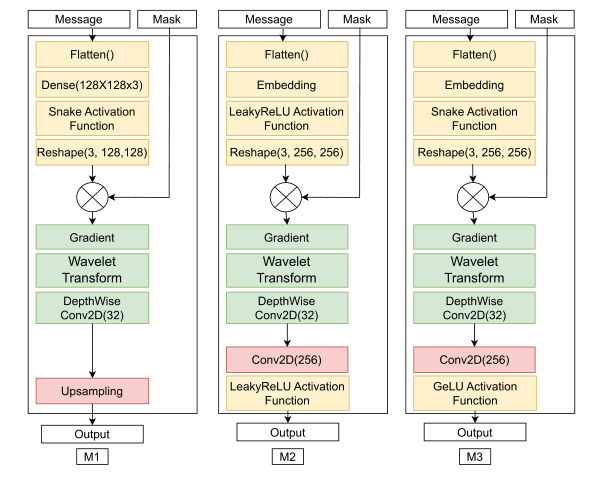
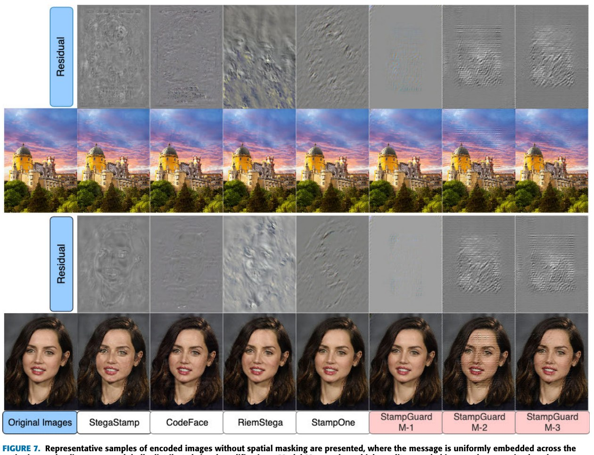
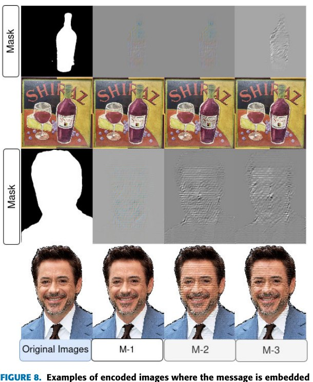

Abstract
Data-hiding techniques such as robust steganography and invisible watermarking matter for aesthetic stamps, copyright protection, privacy-preserving communication, and content provenance. Existing print-proof steganography methods, however, often struggle to embed messages in small image regions or to decode them from very low-resolution printed outputs.
We introduce DocSafe, a framework that embeds binary messages of up to 256 bits into images while producing stamp-like outputs robust to both digital and physical distortions. The method enables region-aware embedding via spatial masks, analyzes how wavelet sub-band frequencies affect robustness, and evaluates covariance-based losses — identifying Stein divergence for the encoder and the Affine-Invariant Riemannian Metric (AIRM) for the decoder as the most effective configuration. A lightweight decoder architecture further improves both imperceptibility and decoding accuracy.
DocSafe achieves 100% bit accuracy from printed images as small as 2×2 cm on face data and 3×3 cm on object data — state-of-the-art results for print-proof steganography, including when messages are confined to specific regions via spatial masks. It also improves visual quality (ColorHisto 0.05, FID 11.11) while maintaining strong decoding accuracy under a range of digital noise conditions.
Foundations: frequency analysis & covariance loss
DocSafe's design rests on two controlled analyses run before the final architecture was fixed: which wavelet frequency sub-bands actually help, and which covariance-alignment loss actually stabilizes training.
Which frequencies matter, for what
Following StampOne, every input is decomposed with a gradient operator and a Haar wavelet transform into Low-Low (LL), High-Low (HL), Low-High (LH), and High-High (HH) sub-bands, and a learnable depthwise-convolution layer weighs each sub-band's contribution. Reading off those learned weights after training reveals three different priorities: the original image favors HH and LH (45% and 24% of the weight); the message favors the gradient and HL channels (31% and 30%); and the decoder, reconstructing from an encoded image, again favors the gradient and HH (44% and 26%).

A controlled ablation (six models, each restricted to a different sub-band combination) confirmed that using the full sub-band set (M-ALL) beats every single-band restriction on both perceptual quality and decoding accuracy — the individual sub-bands are complementary, not redundant.
Which covariance loss stabilizes training
To fight the domain shift between synthetic training noise and real printed/captured distortions, DocSafe aligns the covariance matrices of paired batches (e.g. original vs. encoded images) using a Vision-Transformer-style patch embedding. Four covariance metrics were compared — Log-Euclidean Distance, the Affine-Invariant Riemannian Metric (AIRM), Jeffrey Divergence, and Stein Divergence.


| Encoder covariance loss | SSIM ↑ | LPIPS ↓ | ColorHisto ↓ | FID ↓ |
|---|---|---|---|---|
| M-AIRM-NoPatches | 0.79 | 0.04 | 0.05 | 30.54 |
| M-AIRM | 0.82 | 0.03 | 0.05 | 16.77 |
| M-Stein (used in DocSafe) | 0.86 | 0.03 | 0.04 | 14.83 |
| M-Jeffrey | 0.80 | 0.06 | 0.12 | 25.30 |
The upshot — and a key finding of this work — is that covariance metrics are task-specific: AIRM is the right choice for aligning the decoder's recovered message, while Stein divergence is the right choice for aligning the encoder's output image.
Method
Built on the two analyses above, DocSafe pairs an encoder inherited from StampOne — extended with a mask-aware Message Embedding Network — with a fully redesigned, BiSeNet-inspired lightweight decoder.

Message Embedding Networks (MEN)
Unlike StampOne, which spreads the message uniformly across the whole image, DocSafe targets semantically relevant regions via a mask. Three MEN variants trade off domain specificity for generalization: MEN-1 (linear projection + Snake activation, depth-map guided) excels on structured domains like faces but doesn't generalize to COCO; MEN-2 (learnable embedding + LeakyReLU) and MEN-3 (learnable embedding + Snake/GELU) trade a little domain-specific quality for much better robustness on heterogeneous, real-world images.

Decoder: a lightweight dual-branch design
Rather than a conventional U-shaped decoder, DocSafe uses a Spatial Path (three Conv2D + SiLU layers preserving low-frequency spatial detail) fused with a Context Path (a trimmed ResNet-18/34 backbone with an Attention Refinement Module capturing high-frequency detail), combined via signal-gated attention. The result matches or beats the original StampOne U-shaped decoder's accuracy at roughly a third of the memory footprint (77 MB vs. 235 MB).
Discriminators & losses
The encoder discriminator uses two Adam optimizers — one purely reinforcing real-image recognition, one jointly minimizing the real/encoded discriminator gap — for more stable adversarial training. The decoder uses a spectral discriminator (FFT + high-pass filter on the original vs. recovered message) inspired by StampOne, encouraging accurate high-frequency reconstruction. Overall, the encoder loss combines Stein divergence, a log-chroma color-histogram loss, LPIPS, and MSE; the decoder loss combines the AIRM covariance loss with binary cross-entropy.
Noise augmentation
Training applies progressive Gaussian noise, JPEG artifacts, grayscale conversion, affine transforms, and cropping between encoder and decoder, so the decoder learns to tolerate the kind of distortion a printed-and-photographed image actually accumulates.
Masked vs. unmasked embedding


Results
DocSafe is compared against CodeFace, StegaStamp, RiemStega, StampOne, and RoSteALS. StampOne's Attention-VNet variant is the primary baseline; all methods embed 256 bits (DocSafe, StampOne) or 100 bits (CodeFace, StegaStamp, RiemStega) per 256×256×3 (or 400×400×3) image.
Encoded image quality — face data (2,000 FFHQ images)
| Method | (A) no mask | (B) with mask | ||||||||
|---|---|---|---|---|---|---|---|---|---|---|
| PSNR↑ | SSIM↑ | LPIPS↓ | ColorHisto↓ | FID↓ | PSNR↑ | SSIM↑ | LPIPS↓ | ColorHisto↓ | FID↓ | |
| StegaStamp | 27.82 | 0.69 | 0.18 | 0.43 | 36.92 | - | - | - | - | - |
| Code Face | 32.31 | 0.93 | 0.30 | 0.08 | 20.70 | - | - | - | - | - |
| RiemStega | 32.01 | 0.90 | 0.02 | 0.06 | 21.66 | - | - | - | - | - |
| StampOne | 28.61 | 0.81 | 0.30 | 0.10 | 33.63 | - | - | - | - | - |
| DocSafe (M-1) | 31.01 | 0.85 | 0.03 | 0.05 | 16.77 | 31.17 | 0.90 | 0.03 | 0.05 | 16.77 |
| DocSafe (M-2) | 27.39 | 0.80 | 0.06 | 0.05 | 35.75 | 28.42 | 0.82 | 0.06 | 0.05 | 35.72 |
| DocSafe (M-3) | 29.06 | 0.86 | 0.09 | 0.08 | 22.02 | 30.68 | 0.88 | 0.04 | 0.04 | 22.0 |
| RoSteALS | 32.81 | 0.95 | 0.04 | 0.09 | 13.49 | - | - | - | - | - |
Encoded image quality — object data (4,000 COCO images)
| Method | (A) no mask | (B) with mask | ||||||||
|---|---|---|---|---|---|---|---|---|---|---|
| PSNR↑ | SSIM↑ | LPIPS↓ | ColorHisto↓ | FID↓ | PSNR↑ | SSIM↑ | LPIPS↓ | ColorHisto↓ | FID↓ | |
| StegaStamp | 22.36 | 0.66 | 0.20 | 0.28 | 15.07 | - | - | - | - | - |
| Code Face | 25.37 | 0.90 | 0.30 | 0.08 | 16.7 | - | - | - | - | - |
| RiemStega | 24.61 | 0.89 | 0.04 | 0.07 | 8.66 | - | - | - | - | - |
| StampOne | 24.36 | 0.81 | 0.33 | 0.10 | 16.23 | - | - | - | - | - |
| DocSafe (M-1) | 23.83 | 0.80 | 0.10 | 0.12 | 4.11 | 24.21 | 0.81 | 0.10 | 0.08 | 4.10 |
| DocSafe (M-2) | 24.12 | 0.79 | 0.04 | 0.05 | 13.24 | 24.32 | 0.81 | 0.03 | 0.05 | 13.23 |
| DocSafe (M-3) | 24.37 | 0.84 | 0.13 | 0.08 | 7.17 | 24.64 | 0.85 | 0.12 | 0.06 | 7.15 |
| RoSteALS | 25.12 | 0.90 | 0.04 | 0.09 | 20.28 | - | - | - | - | - |
RoSteALS scores well on digital perceptual metrics but — as shown below — cannot decode anything once printed.
Print-proof decoding — String Accuracy (%), face data (40 printed FFHQ images)
| Method | (A) no mask | (B) with mask | ||||||
|---|---|---|---|---|---|---|---|---|
| 5×5cm | 4×4cm | 3×3cm | 2×2cm | 5×5cm | 4×4cm | 3×3cm | 2×2cm | |
| StegaStamp | 72 | 70 | 65 | 48 | - | - | - | - |
| Code Face | 55 | 50 | 38 | 15 | - | - | - | - |
| RiemStega | 100 | 100 | 85 | 25 | - | - | - | - |
| StampOne | 100 | 100 | 95 | 62 | - | - | - | - |
| DocSafe (M-1) | 100 | 100 | 100 | 100 | 100 | 100 | 100 | 100 |
| DocSafe (M-2) | 100 | 100 | 100 | 83 | 100 | 100 | 100 | 64 |
| DocSafe (M-3) | 100 | 100 | 55 | 45 | 100 | 100 | 75 | 45 |
| RoSteALS | 0 | 0 | 0 | 0 | 0 | 0 | 0 | 0 |
DocSafe M-1 is the first method in this comparison to hold 100% string accuracy down to a 2×2 cm printed portrait — with or without masking — comfortably ahead of StampOne (62% at 2×2cm) and RiemStega (25%).
Print-proof decoding — String Accuracy (%), object data (40 printed COCO images)
| Method | (A) no mask | (B) with mask | ||||||
|---|---|---|---|---|---|---|---|---|
| 5×5cm | 4×4cm | 3×3cm | 2×2cm | 5×5cm | 4×4cm | 3×3cm | 2×2cm | |
| StegaStamp | 82 | 82 | 82 | 72 | - | - | - | - |
| RiemStega | 100 | 100 | 85 | 22 | - | - | - | - |
| StampOne | 100 | 100 | 95 | 62 | - | - | - | - |
| DocSafe (M-1) | 60 | 25 | 25 | 0 | 22 | 0 | 0 | 0 |
| DocSafe (M-2) | 100 | 100 | 100 | 85 | 100 | 100 | 85 | 68 |
| DocSafe (M-3) | 100 | 100 | 87 | 60 | 100 | 100 | 72 | 45 |
| RoSteALS | 0 | 0 | 0 | 0 | 0 | 0 | 0 | 0 |
On the harder, heterogeneous COCO object set, the face-specialized M-1 struggles — exactly why M-2/M-3 exist. DocSafe M-2 reaches 100% at 3×3cm and 85% at 2×2cm, a 5–23 point improvement over StampOne at the same sizes. CodeFace and prior full-image methods can't be evaluated under masking at all: they have no mechanism to confine embedding to a region.
Digital robustness (2,000 FFHQ images)
| Method | JPEG (%) | Gaussian (std) | Resolution (px) | ||||||
|---|---|---|---|---|---|---|---|---|---|
| 70 | 60 | 50 | 0.08 | 0.06 | 0.04 | 60² | 80² | 100² | |
| StegaStamp | 100 | 100 | 100 | 100 | 100 | 100 | 55 | 80 | 91 |
| Code Face | 80 | 84 | 88 | 55 | 75 | 86 | 2 | 11 | 36 |
| RoSteALS | 87 | 90 | 94 | 23 | 35 | 53 | 81 | 97 | 98 |
| RiemStega | 99 | 100 | 100 | 98 | 99 | 100 | 55 | 99 | 100 |
| StampOne | 100 | 100 | 100 | 98 | 100 | 100 | 84 | 98 | 100 |
| DocSafe (M-1) | 80 | 85 | 100 | 98 | 100 | 100 | 85 | 100 | 100 |
| DocSafe (M-2) | 82 | 87 | 100 | 98 | 98 | 100 | 80 | 98 | 100 |
| DocSafe (M-3) | 82 | 87 | 100 | 90 | 97 | 100 | 80 | 98 | 100 |
DocSafe leads at low resolution and matches the field on Gaussian noise and mild JPEG, but trails StampOne/RiemStega under heavier JPEG compression (70–60% quality) — a known trade-off, not yet closed.
Code
DocSafe is published as the DocSafe Python package with a documented encoder/decoder
entry point.
pip install DocSafefrom DocSafe import encoder, decoder
encoder_router = encoder(model="M1", path_model="pre_trained_models/", secret_size=100)
encoder_router.load_network(device="cpu")
images = encoder_router.read_image(path=["test_images/original_images.jpg"])
image_batch = encoder_router.preprocess_images(images)
encoded = encoder_router(original_images=image_batch, messages="viste", mask=None)
encoder_router.save_encoded_image("encoded.png")
decoder_router = decoder(model="M1", path_model="pre_trained_models/", secret_size=100)
decoder_router.load_network(device="cpu")
encoded_images = decoder_router.read_image(path=["encoded.png"])
encoded_batch = decoder_router.preprocess_images(encoded_images)
messages = decoder_router(encoded_images=encoded_batch, mask=None)
print(messages)Full source and setup instructions are on GitHub → farhadsh1992/DocSafe. Pretrained weights are not bundled in the package (~600 MB, past PyPI's practical limits) — they're available on request: farhad.shadmand@isr.uc.pt.
BibTeX
@article{shadmand2026docsafe,
title = {DocSafe: Toward Practical Print-Proof Image Steganography via Frequency
Decomposition and Covariance Alignment},
author = {Shadmand, Farhad and Medvedev, Iurii and Schirmer, Luiz and Gon\c{c}alves, Nuno},
journal = {IEEE Access},
volume = {14},
pages = {54213--54228},
year = {2026},
publisher = {IEEE},
doi = {10.1109/ACCESS.2026.3680290}
}